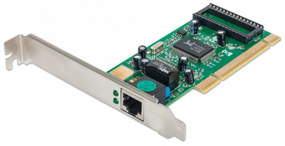

Tarjeta de Red o Adaptador de Red
►Concepto
Se encargan de preparar, transferir y controlar la información o datos que envía a los otros equipos que están conectados en una misma red, no se trata de solo ordenadores, también equipos como impresoras y discos duros externos pueden establecer una conexión
